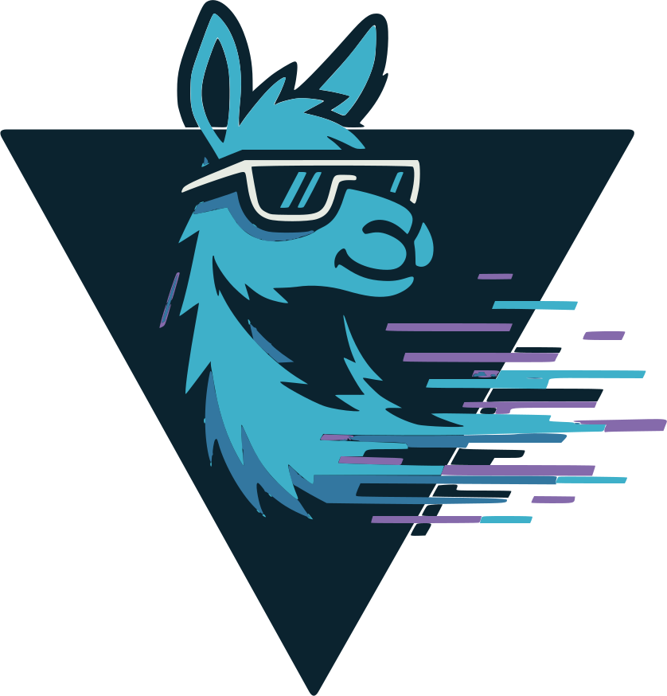

Cards / needs / Experimental AI for early adopters
Experimental AI for early adopters
Try the newest AI tools before they are mainstream?
What people say
- try the newest AI tools before they are mainstream
- run a big model on my own Mac
- an AI coding agent on a machine I own
- an autonomous agent in a sandbox
- a local OpenAI-compatible server for anything
Why people self-host it
People leave hosted coding agents, hosted model APIs, being on a waitlist for it. Why, strongest first: control, privacy, cost, it has to run at home.
Does it suit a machine of your own?
Fits, with conditions young projects change weekly and some act on a machine as its user; they fit a spare machine and a person who likes to tinker, not a team that depends on them
Questions that decide it
- which machine can it have to itself?
- do you want to tinker, or to depend on it?
How to publish it
- Usually
- org for any control panel; an API for other apps on api-key; never none, because these tools run code or models for whoever reaches them
- When the data is private or sensitive
- org only, on a machine with nothing else on it
Who sees what inside it
an agent that runs code or a shell acts on its machine as whoever runs it: give it a spare machine and only the keys it needs, as with OpenClaw
The machine
varies; Edge0 needs an Apple Silicon Mac (M3 or later); agents want a machine they can have to themselves
Cards for it

localaiLocalAI, an OpenAI-compatible server for language, image and audio models on your own machine, its API on a key and its web UI behind orgpassed 2026-11-06, Edgible 1.4.29fit 2/3